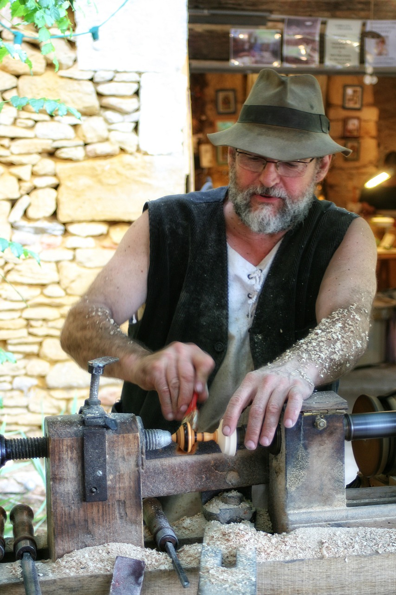

At Andrew's Art of Wood, we take immense pride in our craftsmanship and expertise in crafting exquisite wooden decks. Founded by Andrew himself, our one-person enterprise has flourished from humble beginnings to become a trusted name in the industry. With a passion for woodworking and an unwavering commitment to delivering unparalleled quality, we have established ourselves as the go-to destination for all your wooden deck needs.
Andrew's journey began from scratch, as he immersed himself in the world of woodworking. With dedication and a thirst for knowledge, he honed his skills, mastering the art of creating stunning wooden decks. Every step of the way, he meticulously studied different wood types, construction techniques, and design principles to ensure that each deck we produce is a testament to our unwavering commitment to excellence.
At the core of our business philosophy is the belief that a wooden deck is more than just a structure; it's a space where memories are made, where laughter and joy resonate, and where families and friends gather to create lasting connections. With this in mind, we pour our heart and soul into every project, ensuring that our creations not only enhance the beauty of your property but also enrich your lifestyle.
What sets us apart is our unwavering dedication to delivering the highest quality craftsmanship. We source only the finest, sustainably harvested wood, carefully selecting each piece for its durability, natural beauty, and ability to withstand the test of time. Our attention to detail is unmatched, as we meticulously handcraft every element of your deck, from the sturdy foundations to the intricate railing designs, ensuring that no aspect is overlooked.
We understand that every client is unique, with their own vision and requirements. That's why we prioritize open communication and collaboration, working closely with you to transform your ideas into reality. Our experienced team will guide you through the entire process, offering expert advice and tailored solutions to suit your specific needs. From the initial design consultation to the final installation, we strive to exceed your expectations and create a wooden deck that surpasses your wildest dreams.
As a testament to our unwavering commitment to customer satisfaction, we have garnered a loyal clientele who value our craftsmanship, professionalism, and attention to detail. Their trust and referrals have been the driving force behind our success, and we are eternally grateful for their continued support.
Whether you envision a charming deck for intimate gatherings or a sprawling outdoor oasis for grand celebrations, Andrzej's Wooden Decks is here to turn your aspirations into reality. Explore our portfolio and discover the timeless beauty of our creations. We look forward to embarking on this journey with you, crafting a wooden deck that will be the pride of your home for years to come. Contact us today to schedule a consultation and let us bring your dream deck to life.